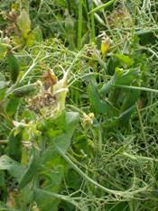
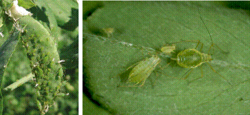

| Home |
| PEST OF PEAS |
MAJOR PESTS |
| 1. Pea Leaf-miner |
| 2. Pea Stem Fly |
| 3. Pea Aphid |
MINOR PESTS |
| 1. American Bollworm |
| 2. Pea Pod Borer |
| Questions |
| Download Notes |
PEAS :: MAJOR PESTS :: PEA APHID
3. Pea Aphid: Acyrthosiphon pisum (Aphididae: Hemiptera)
|  |
Distribution and status: Cosmopolitan in distribution
Host range: Peas - Phaseolus mungo , Phaseolus aconitifolius Jacq., soybean, cowpeas, Lablab niger
Damage symptoms
Aphids are carriers of pea mosaic. Both nymphs and adults suck the sap from young shoots, ventral surface of tender leaves, inflorescence and even on stems. Curling and distortion of leaves, stunting and malformation shoots occur. Leaves turn pale and dry. Honeydew secretion of aphids leads to sooty mould which hinders the photosynthetic activity of the plants.
Bionomics
Adult aphids are soft bodied, long legged, pear-shaped, green yellow or pink in colour with long conspicuous cornicles Both alate as well as apterous forms are present and these are generally females; males are rare. Winged and wingless males have been reported from Europe and USA but not from India. Reproduction is parthenogenetic and viviparous. It takes about a week to complete one generation and there are several overlapping generations in a year.
|  |
Management
Spray 1.0 L of dimethoate 30 EC in 750 L of water per ha when the attack starts and repeat after 15 days if necessary.